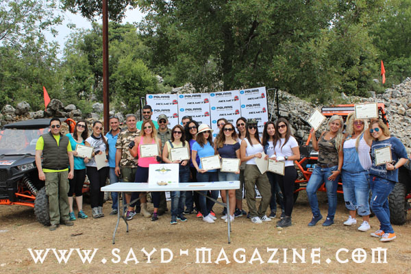
اقام "مركز الشرق الأوسط للصيد المستدام" بالتعاون مع مجلة "صيد" وشركة Helmets on / Polaris وجمعية حماية الطبيعة في لبنان SPNL ومجموعة الصيادين Trigger Team ورشة تدريب للنساء على القيادة خارج المسارات OFFROAD في مركزه في Zoummar Village في منطقة عنايا - مار شربل. السبت 9 /7/ 2016 . شارك في الورشة 17 امرأة من مختلف المناطق اللبنانية تدربن على القيادة بعدة مستويات بإشراف مدربين محترفين من الشركة . تأتي هذه الورشة بترتيب ثالث بعد الرماية بالقوس والسهم والرماية ببندقية الخردقة المحترفة PCP، ضمن سلسلة ورش تدريبية بعنوان " المرأة في عالم الطبيعة والمغامرة " اطلقها المركز لتعزيز معرفة وخبرة المرأة في هذا المجال لانها القادرة على خلق مجتمع أرقى بفضل جديتها وحرصها وتأثيرها. وقد تم التوقيع من قبل المشاركين من رعاة ومشاركات على قانون اخلاقي من خمس بنود اطلقه المركز والشركة يكفل عدم احداث الضرر بالطبيعة اثناء ممارسة هذه الرياضة اذا تم التقيد به على اوسع نطاق . ومن الجدير بالذكر ان بلدية العاقورة بشخص رئيسها الدكتور منصور وهبي قد وقعت على هذا القانون خلال زيارة قام بها رئيس مركز الشرق الاوسط للصيد المستدام ادونيس الخطيب برفقة رئيس Trigger Teamخالد بو يونس ورجلي الاعمال الصيادين جورج خشان وجورج عيد لبحث موضوع الصيد الجائر الذي يمارسه القواصون في مناطق الجرد . وقد اهتم وهبي بموضوع هذا القانون وتبناه من ضمة الخطة البيئية لحماية جرد العاقورة واملاك وازراق الناس وارواح ممارسي هذه الهواية. اليكم بعض الصور ..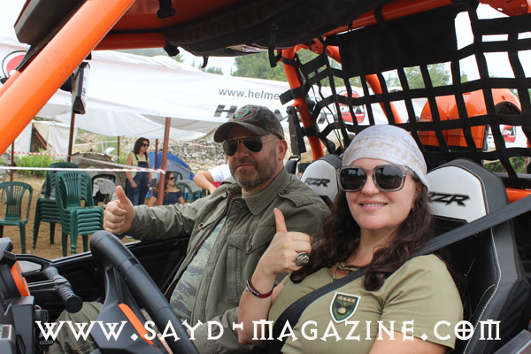
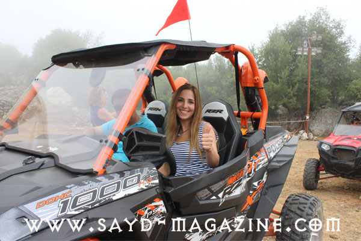
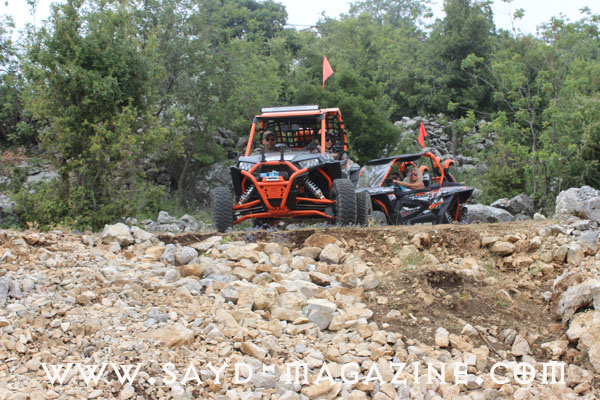
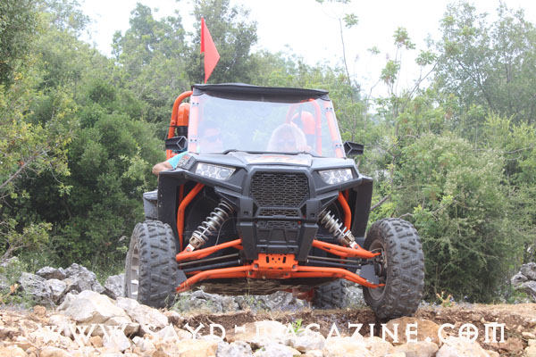
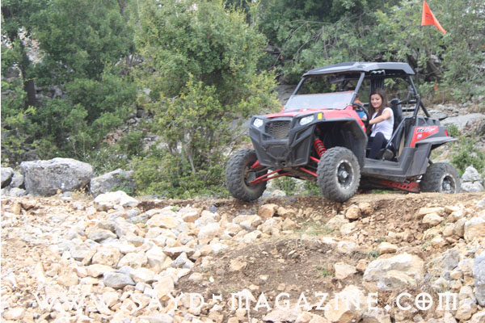
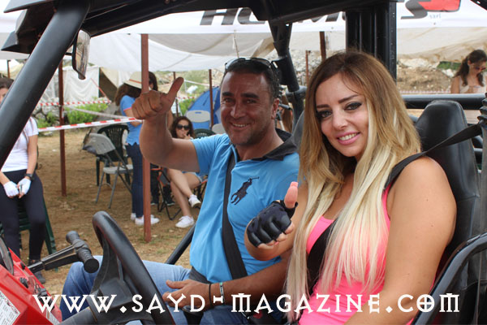
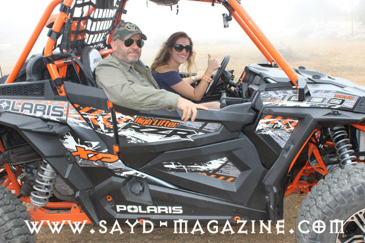
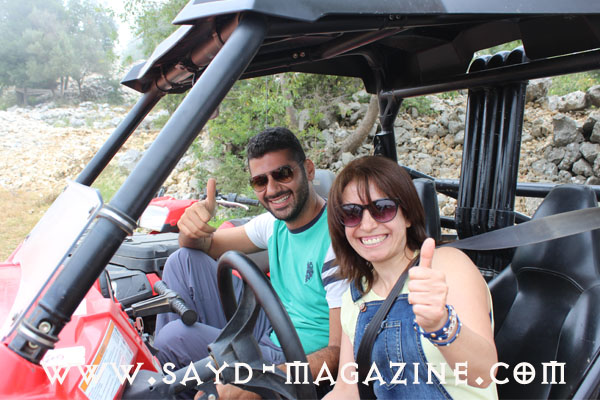
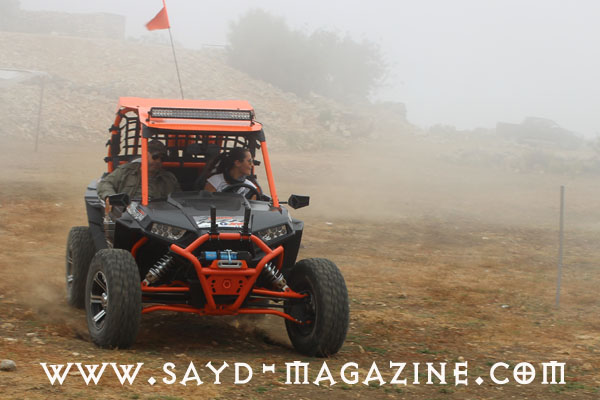
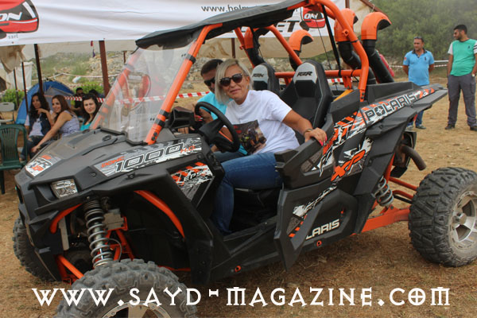
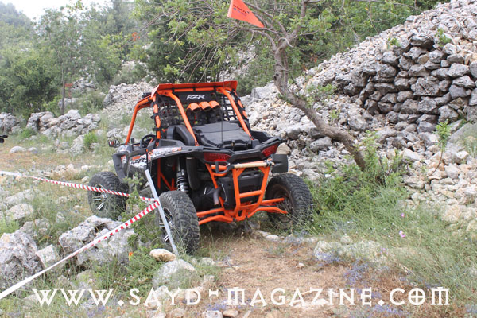
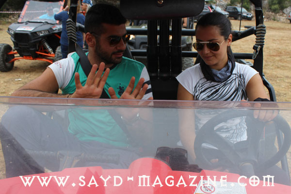
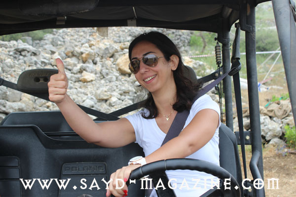
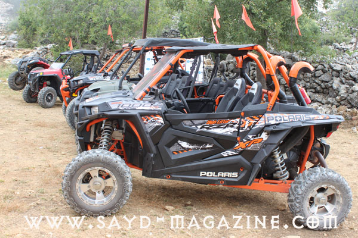
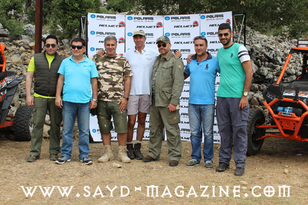
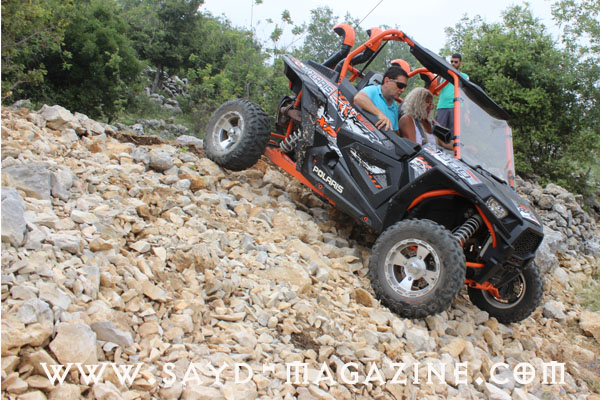
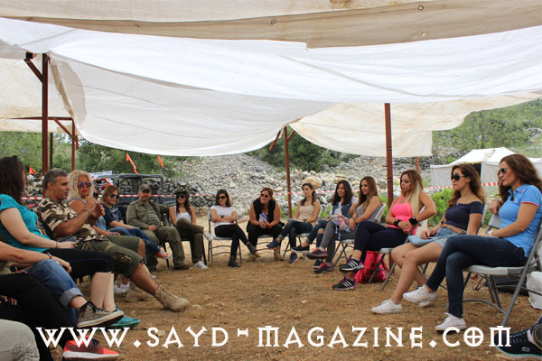
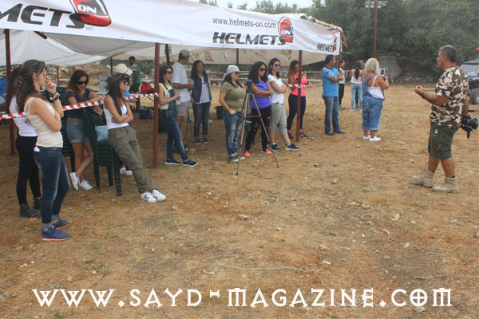
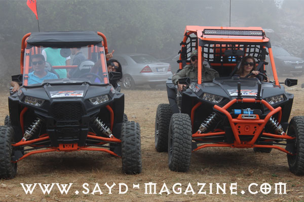
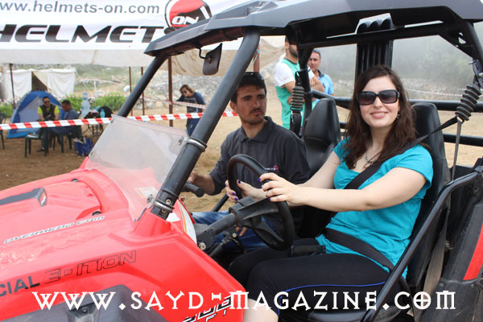
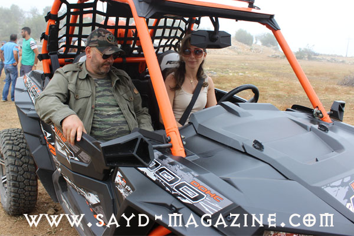
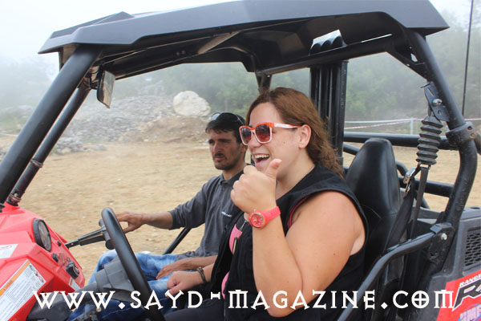
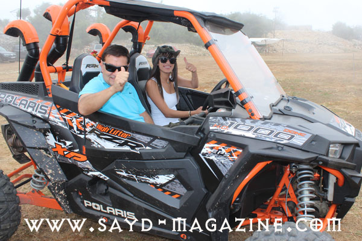
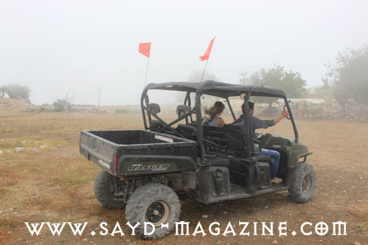
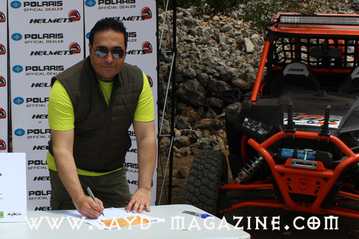
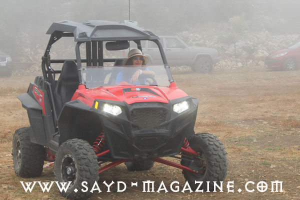
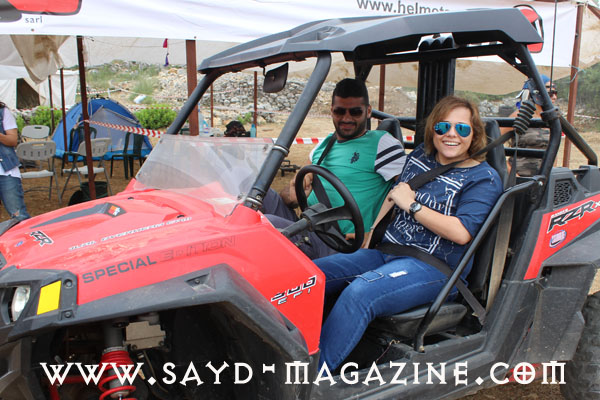
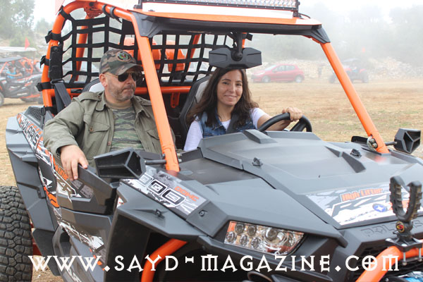
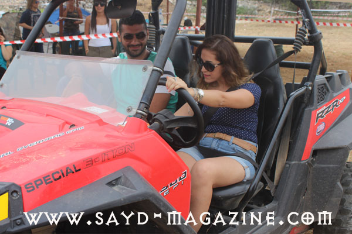